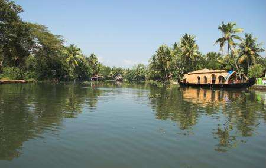
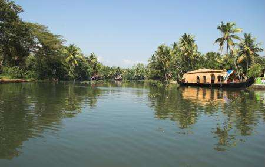

Ashtamudi lake
The incredible beauty of Kerala, Ashtamudi lake has eight branches that coincide with the Arabian sea after converging into one channel, hence the name Ashtamudi, where Ashta means eight and mudi means branch. Spell-binding the travelers with its inarticulate and persuasive charm, this second largest lake in Kerala is one of the most popular places to visit in Kollam.
 
